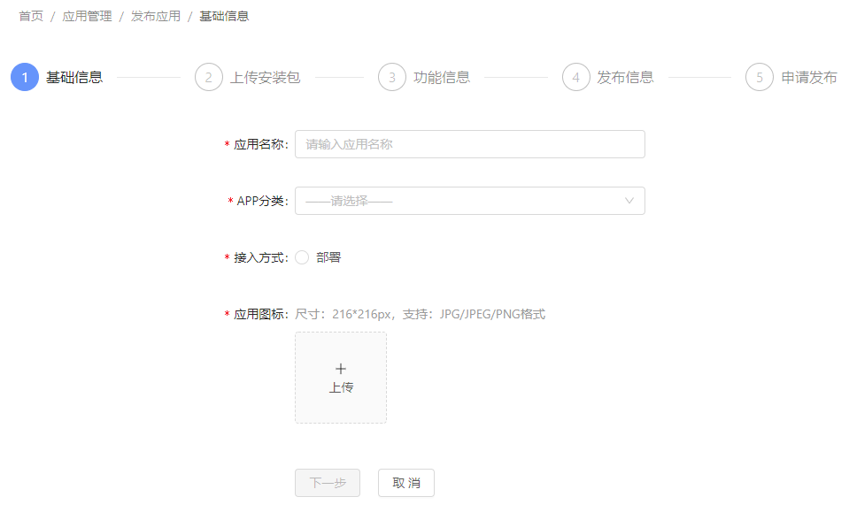
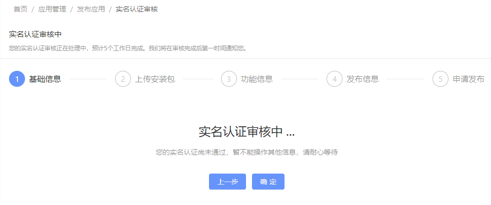
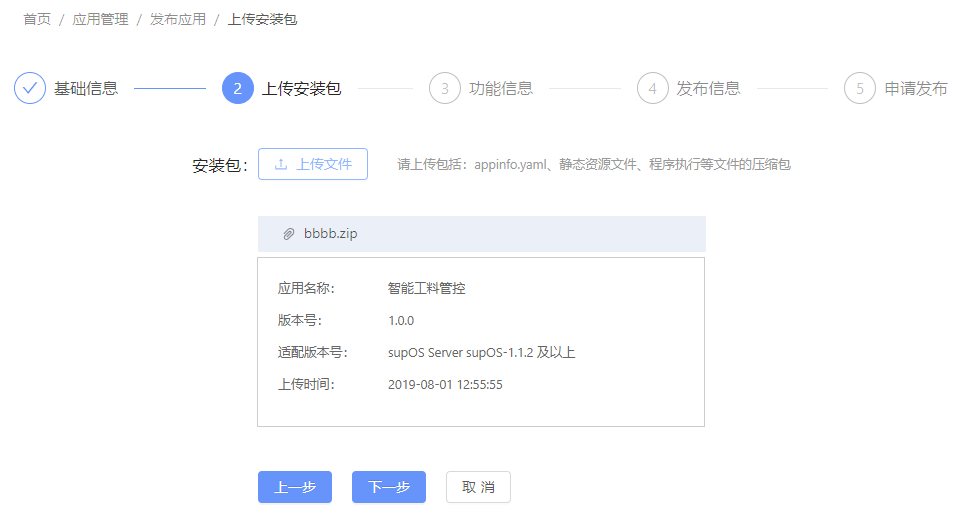
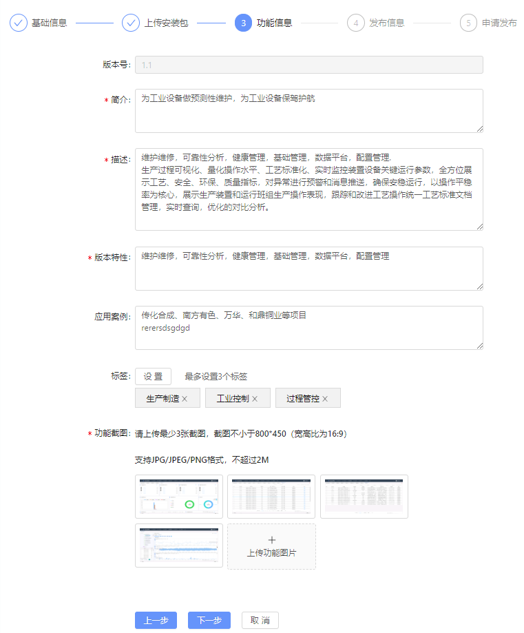
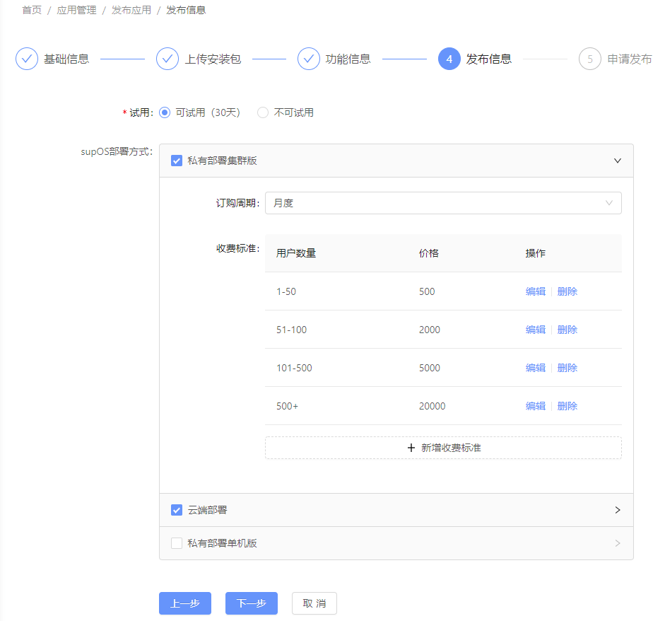
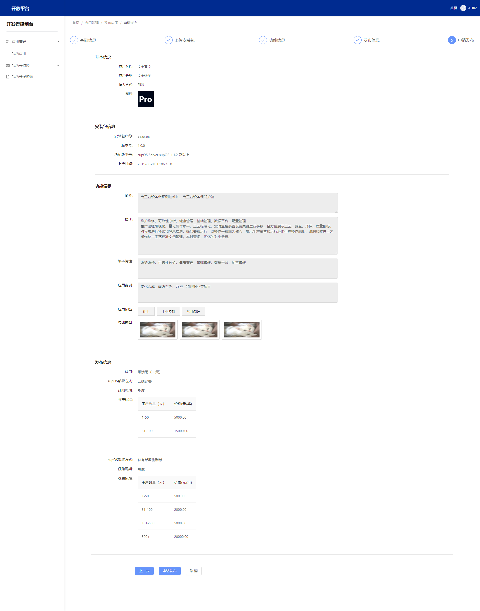
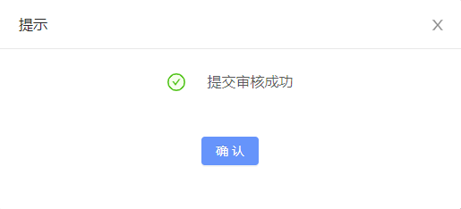

创建并管理应用操作指南
创建并管理应用操作指南
开发者在开发环境中，开发完成了自己的APP，如何将自己的APP发布到应用市场，推广自己的APP并产生一定的经济效益呢？下面，我们来说明下应用发布的过程,简单描述如下。
1. 登录开发者控制台¶
提交开发者实名认证后，在开放平台首页点击“开发者控制台”，链接跳转到开发者控制台管理界面，或者直接在网址中输入 www.supos.net 登录进入开发者控制台。
进入开发者控制台主页面，如果当实名认证尚在审核中时，开发者控制台首页上方将会高亮显示相应的提示信息，如下图所示：
之后，进入我的应用菜单，该菜单显示当前开发者账号下，发布或编辑过的所有应用，其上有根据应用的发布状态标签页，点击不同的状态，下方列表将根据状态切换显示对应状态下的应用列表，点击页面右侧的“发布新应用”按钮，即可开始发布应用。
下表解释了这些应用发布状态的含义与权限操作
| 发布状态 | 应用状态 | 状态说明 | 权限操作 |
|---|---|---|---|
| 未上架 | 未发布 |
应用首次提交发布之前，处于编辑中的应用状态 | 可编辑、可删除 |
| 未上架 | 审核中 |
应用首次提交发布后的状态 | - |
| 未上架 | 审核未通过 |
应用首次提交或版本更新提交审核失败后的状态 | 可重新发布 |
| 已上架 | 已上架 |
应用首次提交或版本更新提交审核成功后的状态 | 可升级 |
| 已上架 | 升级中 |
应用版本更新提交发布后的状态 | - |
| 已上架 | 更新未发布 |
应用版本更新仍处于新版本设置信息阶段状态 | 可升级 |
| 已上架 | 升级失败 |
应用版本升级审核未通过状态 | 可重新提交更新申请 |
| 已下架 | 已下架 |
应用申请下架或被强制下架后的状态 | 可重新发布 |
2. 发布新应用¶
2.1 创建应用¶
点击“发布新应用”按钮后，跳转到在如下的“基础信息”页面，填写应用的基本信息，并点击“保存”或者“下一步”按钮。

注意项当实名认证尚在审核中时，开发者不能进行下一步操作，点击下一步按钮将会跳转到审核提示页面，如下图所示：

当实名认证审核通过后，点击“下一步”按钮进入“上传安装包”界面。
2.2 上传安装包¶
页面上会提示您请上传包括：appinfo.yaml、静态资源文件、程序执行等文件的zip类型的压缩包，当您准备好相应的安装包后，点击“上传文件”按钮，选中您的APP运行安装包文件上传，此时开发者控制台将针对您的安装包进行审核验证，有一个上传的时间过程，请您耐心等待。

成功上传后,将会在页面下方显示安装包的基本信息，请检查和您上传的内容是否一致。 查验无误后，点击“下一步”按钮进入“功能信息”设置页面。
2.3 应用功能信息¶
在当前页面，您可以完善您的应用介绍性相关的信息，其中涵盖了：应用一句话简介，应用功能描述，当前版本特性说明，应用案例说明，设置应用标签，上传应用功能截图等，如下图所示：

设置完成后，点击“下一步”进入“分发信息”设置页面。
2.4 应用分发信息¶
应用分发设置页面，主要设置应用收费模式以及订购规格套餐信息。其中涵盖了：supOS的部署方式、是否可对外试用、对应部署方式下的APP订购周期与收费标准等。如下图所示：

以上信息设置完成后，在应用成功发布上架到应用商店时，APP购买者用户在选购的时候将能够通过您相关的配置，选择对应的规格套餐进行付费购买/申请试用。
2.5 申请发布，提交审核¶
在之前的所有页面的信息都已正确填写后，可以进入当前tab页面查看之前设置的信息，请您再次确认下： 应用的基本信息是否正确； 上传的安装包信息是否正确； 上传的功能描述信息是否正确； 应用分发信息设置是否正确；
如果以上信息查验有误，请点击“上一步”按钮，返回到相应的页面进行修改后，重新查验； 确认已做好上述所有的准备工作后，点击“申请发布”提交上线申请，提交成功后点击确认将返回到我的应用列表首页，此时应用的状态为“审核中”，至此，您成功的发布了一个APP，等待开放平台运营商审核。


3. 应用上架¶
如果应用不符合上架规范，蓝卓方会通过消息中心以及开发者的手机号或邮箱告知开发者审核失败的原因，请开发者根据原因进行变更，确认满足要求后重新提交发布申请。 应用符合上架规范后，蓝卓方也会通过消息中心以及开发者的手机号或邮箱告知开发者。且在开发者控制台的“我的应用”列表首页，可以查看到应用状态已变更为“已上架”。
此时，开放平台运营商管理控制台设置应用上架，并打开入口，应用将正式出现在应用商店展示列表中，开发者可以进入 应用商店 搜索并查看自己APP上架展示信息。
4. 管理应用¶
4.1 应用详情¶
应用创建后，开发者可以通过点击“应用名称”，进入应用详情页面，查验您设置的应用信息是否正确。 页面展示如下信息：应用基本信息、安装包信息、功能描述信息、应用分发信息。通过以上信息展示可以体现您设置信息的完整度，如有遗漏或未设置的，您可以通过点击列表页面对应行记录右侧的“编辑”或“版本更新”按钮，进入相应的环节页面进行完善和修改。
4.2 历史版本¶
如果您的应用已经发布过多个版本，相对应的所有历史版本记录信息，将在此页面进行列表展示。 版本的列表页面主要显示了应用的版本号、版本发布时间、版本特性说明；如果您想要显示历史版本的详情信息，请点击列表右侧的“更多”按钮，将跳转到当前选中版本记录的应用详情信息标签页面，展示您之前设置的所有相关信息。
5. 术语解析¶
| 名词 | 说明 | 格式 |
|---|---|---|
| 应用名称 | 网页端和客户端显示的名称； 上传安装包后将显示安装包应用描述文件中设置的名称（Name），可进行再次编辑； |
初始创建设置名称不能超过20个字符，名称中可以适当添加描述语； 输入时请注意以下事项： 1.应用名不能与蓝卓开放平台中已存在应用重名； 2.如应用名称涉及侵权，核实后蓝卓开放平台有权在不提前知会开发者的情况下进行修改； 3.应用名不能含有蓝卓自有品牌及相关元素，如名称中包含supOS、蓝卓、深蓝、Bluetron等字眼； 4.应用名不能含有“黄赌毒”等低俗敏感字样。 |
| 版本名 | 默认为安装包应用描述文件中的版本号（appVersion）； | 参照国际版本号设置规则 |
| 开发者名称 | 默认为开发者账号的开发者名称，会显示在应用信息中，用户可以根据开发者名称找到您开发的其他应用； | |
| 应用标签 | 填写或选择与应用功能相符的便签，提高应用在应用商店SEO的效果，方便用户更容易通过标签关键字搜索到您的应用； | 不能超过3个； 使用空格隔开； 总长度不能超过50个字符； 不能使用和应用功能无关的关键字； 不能加入相关应用的竞品名称。 |
| 一句话简介 | 例如：监控系统：工业园区的明眸； | 须客观展示产品功能及特性； 勿使用极限此或虚假承诺等违反新广告发的内容，如“最”“唯一”“NO.1”等； 使用陈述句，勿使用疑问、反问等句式； 保持在50个字符之内，句末勿加标点 |
| 应用描述 | 如实介绍应用的功能和亮点，方便用户快速上手，不要有过多的SEO优化和空行； 官网、更新日志、测试账号，可以选择性填写； |
应用功能介绍，100-5000个字符 |
| 版本特性 | 如实介绍应用该次版本发布的亮点和优化介绍等，条理清晰； | 用于在版本管理显示界面显示，不超过300个字符 |
| 应用案例 | 如实填写该应用已应用过的客户使用案例，图文并茂，为当前应用介绍增加吸引力； | 实际使用场景案例说明，不超过1000个字符 |
| 功能截图 | 应用截图至少需要提交三张符合尺寸要求的截图，截图不用转换图片方向，使用原始截图提交即可； | 支持JPG、JPEG或PNG格式； 截图不小于：800*450（宽高比为16:9），单张图片最大为2M |
6. 应用上架审核规范¶
详见：应用上架审核规范